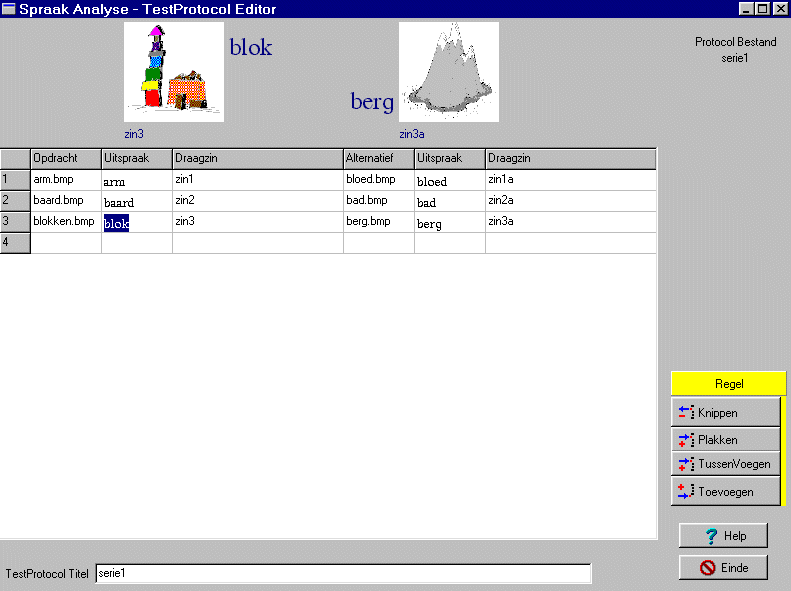

Het samenstellen en wijzigen van de testprotocollen
is momenteel niet vrij gegeven. Indien u testen wilt wijzigen of nieuwe
testen wilt aanmaken, kunt u contact opnemen met dr.
B. Maassen van het IKNC.
Opbouw
van het edit scherm 
In de tabel staat het gehele testprotocol
in tekst weergegeven.
Onder de tabel staat nog de titel van
de test, zoals deze ook in de MID TestOrganizer zal verschijnen. Deze titel
kan gewoon ge-edit worden.
Boven de tabel zijn de gegevens van de
geselecteerde regel grafisch weergegeven.
Rechtsonder zijn de bedieningsknoppen
gesitueerd.
Rechtsboven staat de bestandsnaam van
het testprotocol vermeld.
Indien er fouten zijn, verschijnt er bij
het afsluiten van het bestand, een overzicht van de fouten rechts van de
tabel.
De
tabel
1. De eerste kolom bevat het regelnummer.
2. Opdracht, de bestandsnaam van het plaatje
dat getoond wordt
3. Uitspraak, de bijbehorende uitspraak
in fonetisch schrift
4. Draagzin, hulptekst welke desgewenst
naar het kind kan worden uitgesproken
5. Alternatieve Opdracht
6. Uitspraak, behorend bij de alternatieve
opdracht
7. Draagzin, behorend bij de alternatieve
opdracht
Grafische
representatie
In de grafische presentatie boven de tabel,
wordt de geselecteerde regel uit de tabel weergegeven.
Gelijktijdig zijn zowel de normale opdracht
en de alternatieve opdracht zichtbaar.
Naast de plaatjes staat de bijbehorende
fonetische omschrijving en onder de plaatjes staat de bijbehorende draagzin.
Indien de geselecteerde regel geen plaatjes
bevat of als de plaatjes niet gevonden kunnen worden, verschijnt ter plaatse
van de plaatjes een wit vlak.
De
tabel editen
De kolommen uitspraak en draagzin kunnen
op de normale manier worden ge-edit.
Hierbij is de tabel zodanig aangemaakt
dat zowel op de standaard windows-manier (tabs) naar andere cellen kan
worden gesprongen alsook op de gewone mensen-manier, dus met de ENTER-toets.
De kolommen van de plaatjes kunnen niet
als tekst worden ge-edit, zodra een dergelijk veld is geselekteerd, kan
middels de spatiebalk naar een plaatje worden gezocht. Het zoeken van een
plaatje kan ook worden geactiveerd door te dubbel-klikken op het veld in
de tabel of door op het plaatje (of witte veld als er nog geen plaatje
is) te klikken.
Zolang een veld niet is verlaten, kan
met de ESC-toets de oorspronkelijke tekst worden terugverkregen
Plaatjes
invoegen / wijzigen
De ondersteunde grafische bestanden zijn:
bitmap (bmp), icons (ico), window metafiles (wmf,emf).
Het invoegen / wijzigen van een plaatje
kan op één van de volgende manieren
-
muisklik op het plaatje (of witte veld als
er nog geen plaatje is)
-
selecteer het gewenste veld in de tabel en
druk op de spatiebalk
-
dubbel-klik op het gewenste veld in de tabel
Het
gebruik van de knoppen
Met behulp van de knoppen kunnen regels
worden verwijderd, tussengevoegd en verplaatst.
-
regel knippen
= de geselecteerde regel wordt verwijderd en bewaard in een extra buffer
-
regel plakken
= boven de geselecteerde regel wordt een regel ingevoegd en deze regel
wordt gevuld vanuit het extra buffer, dat gevuld was met regel knippen
-
regel tussenvoegen
= boven de geselecteerde regel wordt een lege regel ingevoegd
-
regel toevoegen=
aan het eind van de tabel wordt een lege regel toegevoegd, u kunt ook gewoon
met de pijltoetsen of ENTER-toets er naar toe lopen, want aan het einde
worden zonodig automatisch nieuwe regels aangemaakt.
-
help toets = toont deze documentatie
-
einde toets = sluit de edit sessie af (er
vind nog fout controle plaats en u wordt gevraagd de bestandsnaam op te
geven)
Programma
afsluiten
Bij het afsluiten van het programma worden
alle regels gecontroleerd op fouten.
Lege regels worden genegeerd en niet opgeslagen
in het testprotocol.
Als er fouten worden geconstateerd, verschijnt
alleereerst een scherm met de vermelding van alle fouten en eventuele waarschuwingen
(mogelijke fouten). Vervolgens kunt u alsnog besluiten het testprotocol
op te slaan inclusief de fouten. De fouten kunnen dan op een later tijdstip
worden verbeterd.
Een regel is helemaal goed als alle 6
velden zijn ingevuld.
Een regel die voldoet aan één
of meer van de volgende voorwaarden kan goed of fout zijn (afhankelijk
van uw bedoeling) en geeft derhalve een waarschuwing:
-
er is geen alternatieve opdracht ingevoerd
-
er is bij de normale en/of de alternatieve
opdracht geen draagzin opgegegeven
Alle andere regels zijn fout.

© Copyright Instrumentele Dienst, 1999
 SM, last updated 2-07-1999
SM, last updated 2-07-1999